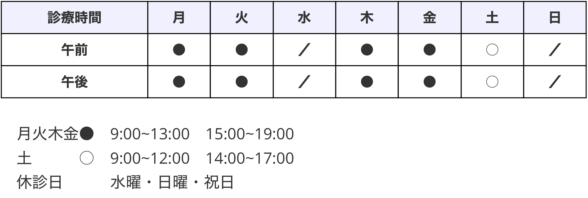

注意事項
新型コロナウイルス感染症（COVID-19）に関する情報
一般の皆様向け（一般社団法人日本耳鼻咽喉科学会のサイトへ移動します）
発熱、せきのある方 あるいは 味覚・嗅覚に異常を感じる方 へ
昨今の新型コロナ対策の一環として、ご来院頂く前に当院に電話（☎：043-225-3387）をして頂きますようお願い申し上げます。
※当院で対応可能かどうかを判断した上で、適切な対応をさせて頂きます。ご協力のほどよろしくお願い申し上げます。
診療案内
一般耳鼻咽喉科
耳・鼻・喉に関して以下のような症状をお持ちの方は、当院に是非ご相談ください。
患者様の病状に応じて、各種血液検査、聴力検査、めまい検査、内視鏡検査などを行い、迅速な診断と的確な治療を行うように努めています。
耳の症状
・耳が痛い ・耳がかゆい ・聞こえが悪い ・耳鳴り など
鼻の症状
・鼻水が出る ・くしゃみ鼻詰まり ・鼻が痛い ・においがしない など
喉の症状
・喉が痛い ・喉の違和感 ・声がかすれる ・味がしない など
アレルギー科
できるだけ毎日を快適に過ごせるように、きちんと対策をしてアレルギー症状を軽減していきましょう。
・通年性アレルギー性鼻炎の症状
・花粉症の症状
営業時間

ヒロ耳鼻科クリニック
千葉県千葉市中央区富士見２丁目２３−８ 山野井ビル３階
TEL 043-225-3387